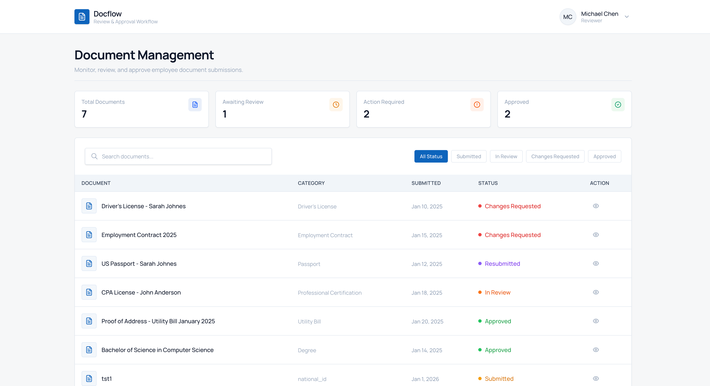
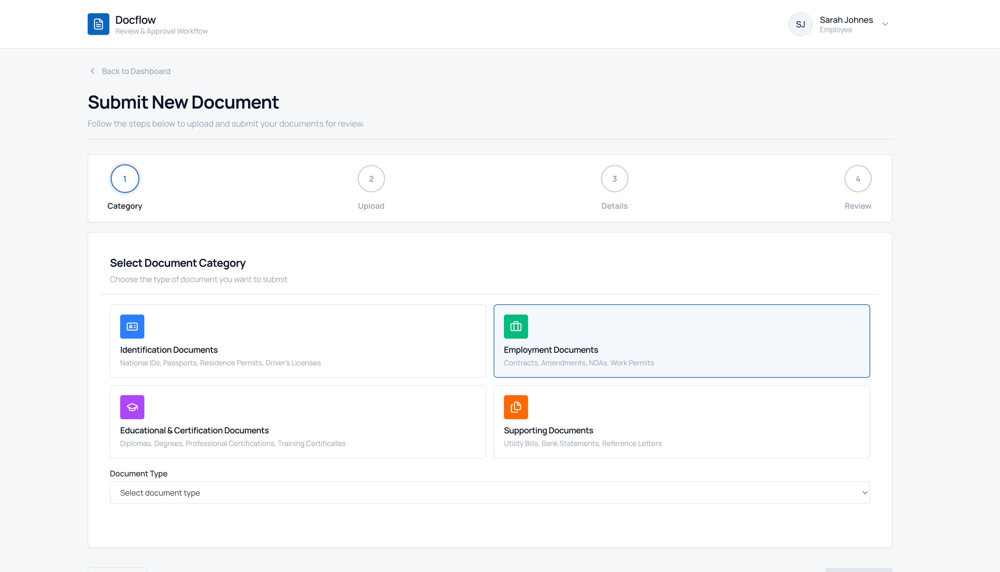
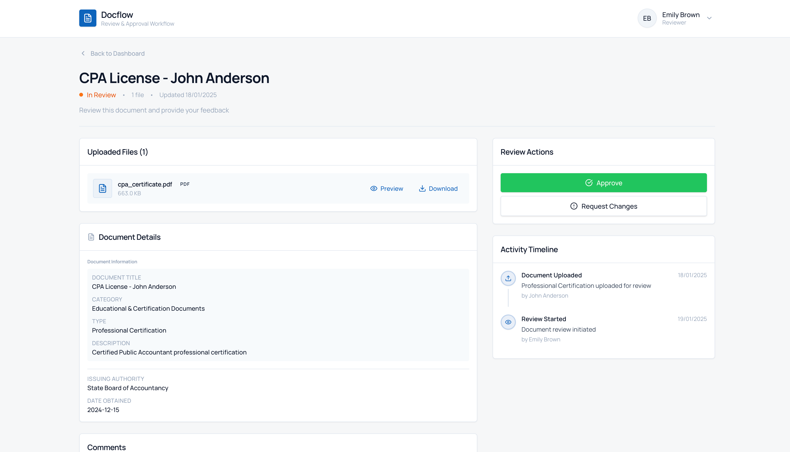
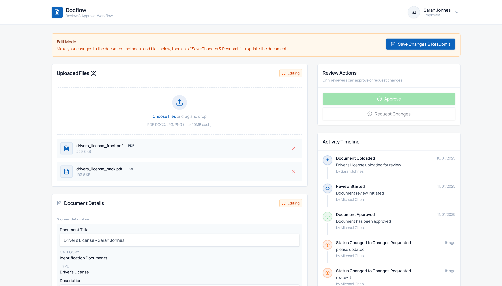
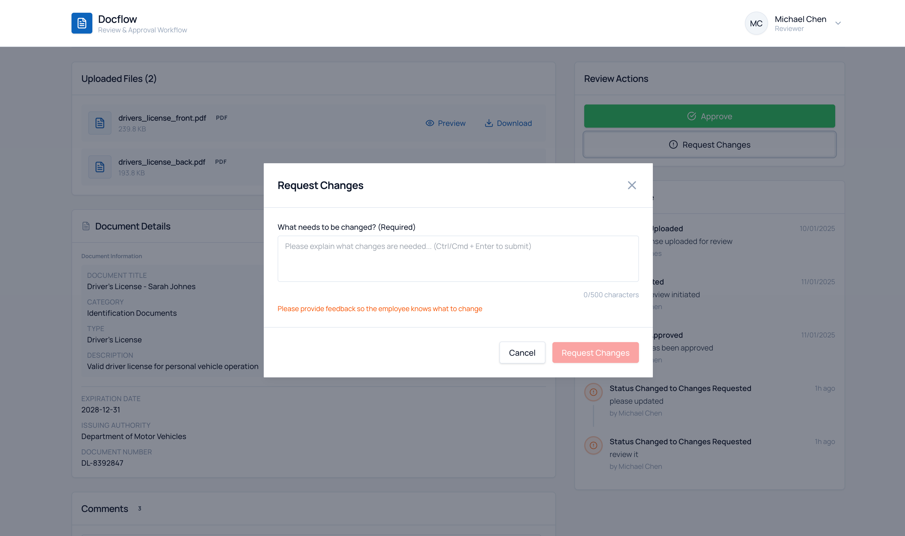
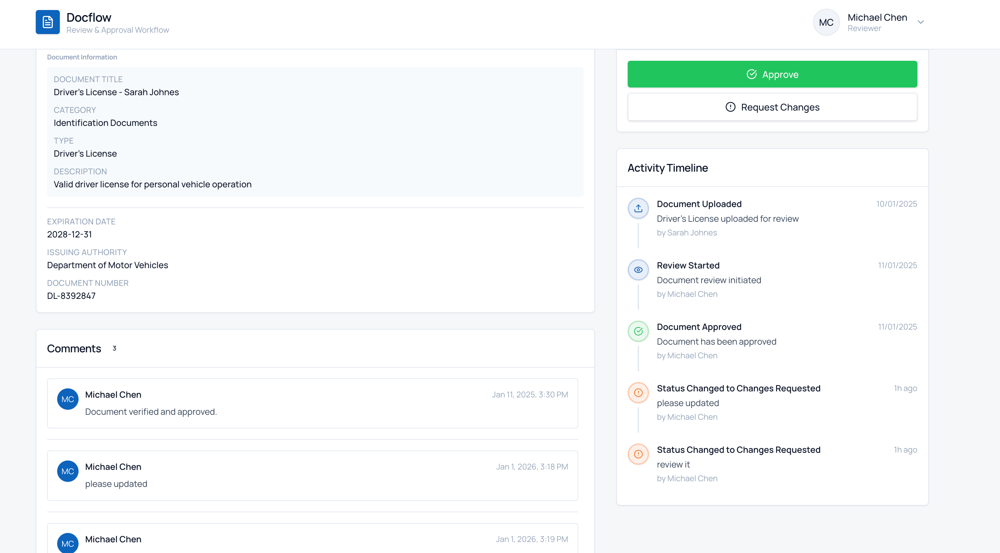

Document Review & Approval Workflow
Technical Assessment Submission - Paul Lakandri
What I Built
A complete React-based system for handling employee document submissions and approvals. Think of it as
replacing the old "email documents back and forth" process with something actually trackable and organized.
The workflow is simple:
- Employees upload documents (IDs, contracts, certificates, etc.) with drag-and-drop
- Fill out a metadata form that adapts to the document type
- Reviewers can approve or request changes (with required feedback)
- If changes are needed, employees can edit everything inline and resubmit
- Full audit trail shows who did what and when
Tech Stack
React 19 • TypeScript • Tailwind CSS 4 • Vite • React Router • Context API + localStorage
Task Requirements ✓
Task 1: Wireframes
- ✓ Upload & Metadata Form (4-step wizard)
- ✓ Review Screen (includes edit mode for changes requested)
- ✓ Dashboard (employee + reviewer views)
- ✓ Activity Timeline
Task 2: React Implementation
- ✓ File upload with drag-and-drop (PDF, DOCX, JPG, PNG, max 10MB)
- ✓ Dynamic metadata forms based on document category
- ✓ Status banners (contextual, dismissible, accessible)
- ✓ 6-stage workflow (Draft → Submitted → In Review → Changes Requested → Resubmitted → Approved)
- ✓ Review screen with comments
- ✓ State management (Context + localStorage persistence)
README Requirements
- ✓ Setup instructions
- ✓ Assumptions (no backend, mock data, etc.)
- ✓ Component architecture
- ✓ Workflow logic notes
I added a few things that weren't required but felt important:
- Full inline editing - When reviewers request changes, employees can edit
files AND metadata right on the review page (not just re-upload)
- Required feedback - Reviewers must explain what needs changing (can't just
click "request changes" with no context)
- Activity timeline - Complete audit trail of every action (marked as optional
in the PDF, but included it anyway)
- localStorage auto-save - Everything persists across page refreshes
- Role switching - Easy to demo both employee and reviewer flows
- Responsive design - Works on mobile
How It Works
For Employees
- Pick your document category (ID, Employment, Education, Supporting)
- Upload files with drag-and-drop
- Fill out the metadata form (fields change based on document type)
- Submit or save as draft
- Get notified when reviewer takes action
- If changes requested, edit everything inline and resubmit
For Reviewers
- See all pending documents on dashboard
- Open any document to review files and metadata
- Add comments if needed
- Approve or request changes (must provide feedback for changes)
- Employee gets notified and can make updates
Key Features
Smart Metadata Forms
The form adapts to what you're uploading:
- IDs/Passports: Expiration date, issuing authority, document number
- Contracts: Start/end dates, contract type
- Certificates: Institution, date obtained, certification type
- Supporting Docs: Issue date, description
Edit Mode (Changes Requested)
When a reviewer requests changes, the employee sees an orange "Edit Mode" banner at the top. They can:
- Upload new files or remove existing ones
- Edit metadata fields (title, description, dates, etc.)
- See reviewer's feedback in comments
- Click "Save Changes & Resubmit" when done
Activity Timeline
Sidebar shows complete history:
- Who uploaded the document
- All status changes with timestamps
- Comments from reviewers
- When it was resubmitted or approved
Assumptions & Limitations
No backend - Everything runs in the browser. Data is stored in localStorage, not a database.
Files don't actually upload anywhere.
No real auth - App assumes you're logged in. Role switching is just for demo purposes.
Mock data - Comes with sample documents showing different workflow states.
Screenshots
Dashboard (Employee & Reviewer views)

Upload Wizard (Category, Files, Metadata, Review)

Review Page (Standard view)

Edit Mode (Changes Requested)

Request Changes Modal (Required feedback)

Activity Timeline & Comments

Quick Setup
To run locally:
npm install
npm run dev
# Visit http://localhost:5173
Built as a technical assessment • January 2026